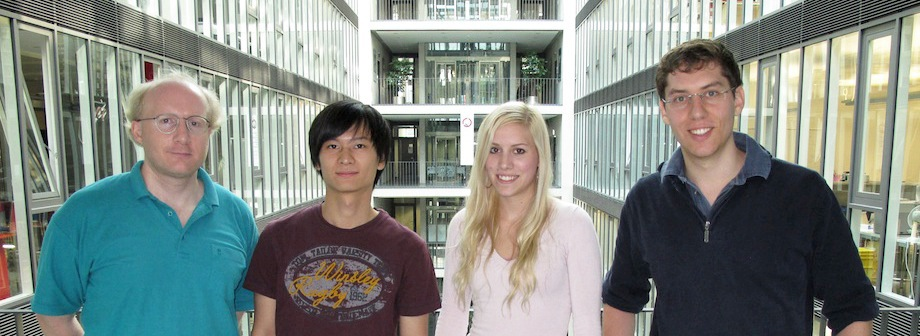

Credits

Nathan Labhart
Nathan studied public communication and informatics at the University of Zurich (UZH). He is currently working as an assistant at the UZH's AI Lab and coordinating the ShanghAI Lectures project, i.e., he supervises the website programmers, takes care of the videoconference and recordings, and tries to keep all the other bits, pieces, and loose ends together :-)
Bo Chen
Bo is a Master student in Business Informatics at the University of Zurich. For his Master Project he participates in the development team for the new e-learning and community platform for the ShanghAI Lectures.
He did the sleeping for all and slept over 20 hours/day. At least somebody had more than 3 hours of sleep per day during the project!
Manuela Züger
Manuela is a Master student in Business Informatics at the University of Zurich. For her Master Project she participates in the development team for the new e-learning and community platform for the ShanghAI Lectures.
She was responsible for the layout and design of the website and the social awareness functionality. Additionally she implemented the registration process as well as the user administration.
Thomas Hunziker
Thomas is a Bachelor student in Software Systems at the University of Zurich. He participates in the development team of the ShanghAI Lectures e-learning and community platform for his Master Project.
He was responsible for the implementation of the grouping algorithm with rules, the implementation of the mass messaging module and setup the development as well as the live environment.
Drupal
This community website is implemented with the open source CMS Drupal. We decided to use Drupal because of the flexibility, the ability to extend the core, the great range of already existing modules and the evolved community. Beside some custom modules we use the following:
- Views: We use the Views module in many areas of the website. Beside on the front end we use it also to build our messaging system.
- Panels: The home site, the group sides, the lecture page and some other sites are build with Panels.
- Organic Groups: For the interest groups and the study groups we use the Organic Groups module.
- Profile2: The different user profiles are implemented by the Profile2 module.
- Media / Media Embedded: For easy creation of board entries we use the Media and the Media Embedded module. The latter of which we have implemented specially for this project and provided back to the Drupal community.
- Rules: For some customization we use the Rules module.
- Mass Messaging: The delivery of messages is done by the Mass Messaging module together with the Views and the Rules module. This module was developed for this project and we provide it back to the Drupal community.
- Features: Potentially the most important module is the Features module. All aspects of the website are packed together with the Features module. This was the key success factor for delivering a relative robust system with in this short time.
Other Technologies
This e-learing application runs on a LAMP stack. We decide to use a LAMP stack because it is widespread for such applications and it is stable. The LAMP stack is the most common way to run Drupal.
Project
The project starts in February 2011. Until Juni 2011 we have done a brief project plan and collect some requirements from the different stakeholders. The implementation plan and the implementation itself was done within three months. In this time we build 36 new modules, we provide 6 of them back to the community and we wrote about 51'000 lines of code. In total we reuse 54 projects from drupal.org. The whole project consists of about 604'000 lines of code.